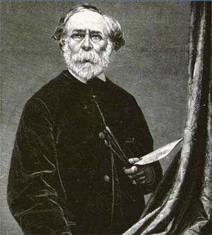
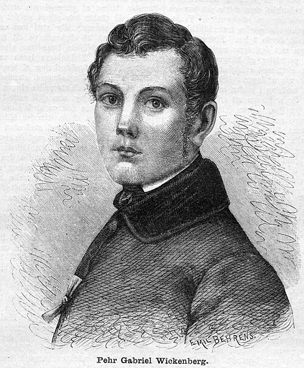
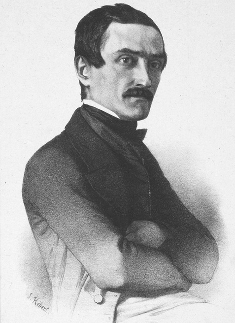
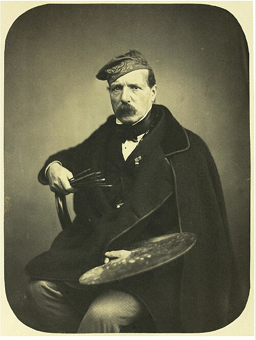
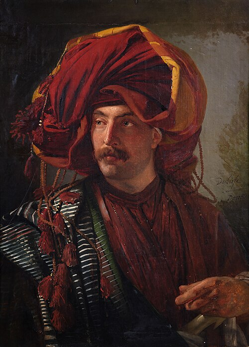
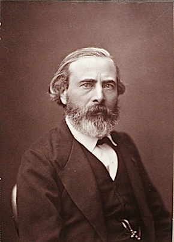
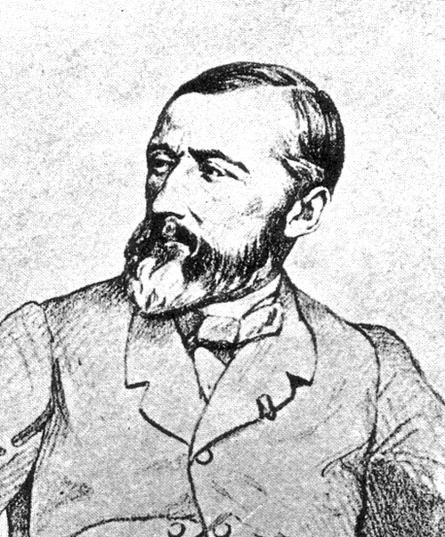
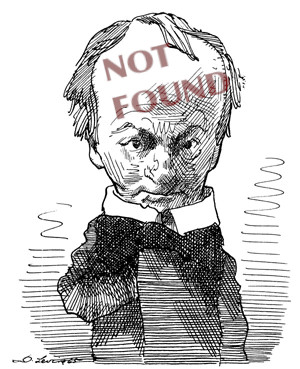
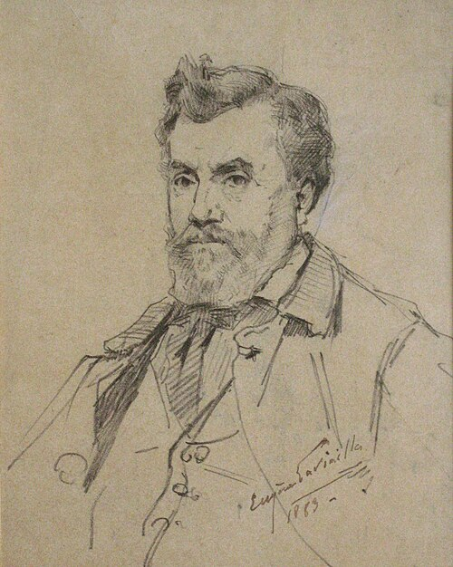
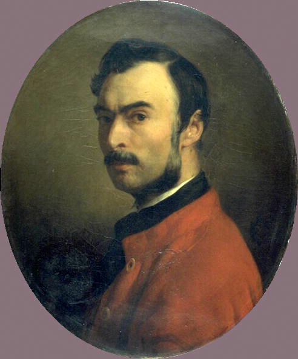

Salon de 1845
Landscapes
Paysages
COROT
Corot

À la tête de l’école moderne du paysage, se place M. Corot. — Si M. Théodore Rousseau voulait exposer, la suprématie serait douteuse, M. Théodore Rousseau unissant à une naïveté, à une originalité au moins égales, un plus grand charme et une plus grande sûreté d’exécution. — En effet, ce sont la naïveté et l’originalité qui constituent le mérite de M. Corot. — Évidemment cet artiste aime sincèrement la nature, et sait la regarder avec autant d’intelligence que d’amour. — Les qualités par lesquelles il brille sont tellement fortes, — parce qu’elles sont des qualités d’âme et de fond — que l’influence de M. Corot est actuellement visible dans presque toutes les œuvres des jeunes paysagistes — surtout de quelques-uns qui avaient déjà le bon esprit de l’imiter et de tirer parti de sa manière avant qu’il fût célèbre et sa réputation ne dépassant pas encore le monde des artistes. M. Corot, du fond de sa modestie, a agi sur une foule d’esprits. — Les uns se sont appliqués à choisir dans la nature les motifs, les sites, les couleurs qu’il affectionne, à choyer les mêmes sujets ; d’autres ont essayé même de pasticher sa gaucherie. — Or, à propos de cette prétendue gaucherie de M. Corot, il nous semble qu’il y a ici un petit préjugé à relever. — Tous les demi-savants, après avoir consciencieusement admiré un tableau de Corot, et lui avoir loyalement payé leur tribut d’éloges, trouvent que cela pèche par l’exécution, et s’accordent en ceci, que définitivement M. Corot ne sait pas peindre. — Braves gens ! qui ignorent d’abord qu’une œuvre de génie — ou si l’on veut — une œuvre d’âme — où tout est bien vu, bien observé, bien compris, bien imaginé — est toujours très-bien exécutée, quand elle l’est suffisamment — Ensuite — qu’il y a une grande différence entre un morceau fait et un morceau fini — qu’en général ce qui est fait n’est pas fini, et qu’une chose très- finie peut n’être pas faite du tout — que la valeur d’une touche spirituelle, importante et bien placée est énorme…, etc…, d’où il suit que M. Corot peint comme les grands maîtres. — Nous n’en voulons d’autre exemple que son tableau de l’année dernière — dont l’impression était encore plus tendre et mélancolique que d’habitude. — Cette verte campagne où était assise une femme jouant du violon — cette nappe de soleil au second plan, éclairant le gazon et le colorant d’une manière différente que le premier, était certainement une audace et une audace très-réussie. — M. Corot est tout aussi fort cette année que les précédentes ; — mais l’œil du public a été tellement accoutumé aux morceaux luisants, propres et industrieusement astiqués , qu’on lui fait toujours le même reproche.
At the head of the modern school of landscape stands M. Corot. — If M. Théodore Rousseau chose to exhibit, the supremacy would be doubtful, for M. Théodore Rousseau joins to a naïveté and originality at least equal to Corot’s a greater charm and greater certainty of execution. — Indeed, naïveté and originality are what constitute M. Corot’s merit. — This artist plainly loves nature sincerely and knows how to look at her with as much intelligence as love. — The qualities in which he shines are so strong—because they are qualities of soul and substance—that M. Corot’s influence is now visible in almost all the works of the younger landscapists, especially in some who had the good sense to imitate him and profit from his manner before he was famous, when his reputation had not yet passed beyond the world of artists. From the depths of his modesty, M. Corot has acted upon a multitude of minds. — Some have applied themselves to choosing in nature the motifs, sites, and colors he favors, and to cherishing the same subjects; others have even tried to imitate his awkwardness. — Now, concerning this supposed awkwardness of M. Corot, there seems to us a small prejudice that ought to be corrected. — All the half-learned, after conscientiously admiring a Corot and honestly paying it their tribute of praise, discover that it sins in execution and agree that, finally, M. Corot does not know how to paint. — Good people! They do not know, first, that a work of genius—or, if you prefer, a work of soul—in which everything is well seen, well observed, well understood, well imagined, is always very well executed when it is executed sufficiently; and second, that there is a great difference between a piece that is made and a piece that is finished; that in general what is made is not finished, while something very finished may not be made at all; that the value of an intelligent, important, well-placed touch is enormous… etc.; from which it follows that M. Corot paints like the great masters. — We need no other example than his picture of last year, whose impression was even more tender and melancholy than usual. — That green countryside where a woman sat playing the violin, that sheet of sunlight in the middle distance illuminating the grass and coloring it differently from the foreground, was certainly a daring stroke—and a very successful one. — M. Corot is just as strong this year as in preceding years; but the public eye has been so accustomed to shiny, clean, industriously polished pieces that the same reproach is always made against him.
Ce qui prouve encore la puissance de M. Corot, ne fût-ce que dans le métier, c’est qu’il sait être coloriste avec une gamme de tons peu variée — et qu’il est toujours harmoniste même avec des tons assez crus et assez vifs. — Il compose toujours parfaitement bien. — Ainsi dans Homère et les Bergers , rien n’est inutile, rien n’est à retrancher ; pas même les deux petites figures qui s’en vont causant dans le sentier. — Les trois petits bergers avec leur chien sont ravissants, comme ces bouts d’excellents bas-reliefs qu’on retrouve dans certains piédestaux des statues antiques. — Homère ressemble peut-être trop à Bélisaire. — Un autre tableau plein de charme est Daphnis et Chloé — et dont la composition a comme toutes les bonnes compositions — c’est une remarque que nous avons souvent faite — le mérite de l’inattendu.
What further proves M. Corot’s power, if only in technique, is that he knows how to be a colorist with a scale of tones that varies little—and that he is always harmonious even with rather raw and lively tones. — He always composes perfectly. Thus in Homer and the Shepherds, nothing is useless, nothing could be removed; not even the two little figures walking away and talking on the path. — The three little shepherds with their dog are delightful, like those fragments of excellent bas-relief one finds on certain pedestals of antique statues. — Homer perhaps resembles Belisarius too much. — Another picture full of charm is Daphnis and Chloe, whose composition, like all good compositions—an observation we have often made—has the merit of the unexpected.
FRANÇAIS
Français

est aussi un paysagiste de premier mérite — d’un mérite analogue à Corot, et que nous appellerions volontiers l’amour de la nature — mais c’est déjà moins naïf, plus rusé — cela sent beaucoup plus son peintre — aussi est-ce plus facile à comprendre. — Le soir est d’une belle couleur.
is also a landscapist of the first rank, with a merit analogous to Corot’s, which we would willingly call love of nature—but it is already less naïve, more knowing; one feels the painter much more strongly, and so it is easier to understand. — Evening is of a beautiful color.
PAUL HUET
Paul Huet

Un vieux château sur des rochers. — Est-ce que par hasard M. Paul Huet voudrait modifier sa manière ? — Elle était pourtant excellente.
An old castle on rocks. — Could M. Paul Huet by any chance be thinking of changing his manner? — Yet it was excellent.
HAFFNER
Haffner

Prodigieusement original — surtout par la couleur. C’est la première fois que nous voyons des tableaux de M. Haffner — nous ignorons donc s’il est paysagiste ou portraitiste de son état — d’autant plus qu’il est excellent dans les deux genres.
Prodigiously original—especially in color. This is the first time we have seen pictures by M. Haffner, so we do not know whether he is a landscapist or a portraitist by profession—particularly since he is excellent in both genres.
TROYON
Troyon

fait toujours de beaux et de verdoyants paysages, les fait en coloriste et même en observateur, mais fatigue toujours les yeux par l’aplomb imperturbable de sa manière et le papillotage de ses touches. — On n’aime pas voir un homme si sûr de lui-même.
still paints beautiful and verdant landscapes, paints them as a colorist and even as an observer, but always tires the eyes by the imperturbable self-assurance of his manner and the flickering of his touches. — One does not like to see a man so sure of himself.
CURZON
Curzon

a peint un site très-original appelé les Houblons. — C’est tout simplement un horizon auquel les feuilles et les branchages des premiers plans servent de cadre. — Du reste, M. Curzon a fait aussi un très-beau dessin dont nous aurons tout à l’heure occasion de parler.
painted a very original site called The Hops. — It is simply a horizon framed by the leaves and branches of the foreground. — Besides, M. Curzon has also made a very beautiful drawing which we shall have occasion to discuss presently.
FLERS
Flers

Je vais revoir ma Normandie, C’est le pays…
I am going back to see my Normandy, / It is the land…
Voilà ce qu’ont chanté longtemps toutes les toiles de M. Flers. — Qu’on ne prenne pas ceci pour une moquerie. — C’est qu’en effet tous ces paysages étaient poétiques, et donnaient l’envie de connaître ces éternelles et grasses verdures qu’ils exprimaient si bien — mais cette année l’application ne serait pas juste, car nous ne croyons pas que M. Flers, soit dans ses dessins, soit dans ses tableaux, ait placé une seule Normandie. — M. Flers est toujours resté un artiste éminent.
That is what all M. Flers’s canvases sang for a long time. — Do not take this for mockery. Indeed, all those landscapes were poetic and made one want to know those eternal, lush green places which they expressed so well—but this year the application would be unjust, for we do not believe that M. Flers, either in his drawings or in his paintings, has included a single Normandy. — M. Flers has always remained an eminent artist.
WICKEMBERG
Per (Pehr Gabriel) Wickenberg

peint toujours très-bien ses Effets d’hiver ; mais nous croyons que les bons Flamands dont il semble préoccupé ont une manière plus large.
still paints his Winter Effects very well; but we think the good Flemings who preoccupy him have a broader manner.
CALAME et DIDAY
Calame Et Diday


Pendant longtemps on a cru que c’était le même artiste atteint de dualisme chronique ; mais depuis l’on s’est aperçu qu’il affectionnait le nom de Calame les jours qu’il peignait bien…
For a long time people thought this was one artist suffering from chronic dualism; later they discovered that he favored the name Calame on the days when he painted well…
DAUZATS
Dauzats

Toujours de l’Orient et de l’Algérie — c’est toujours d’une ferme exécution !
Always the East and Algeria—and always firmly executed!
FRÈRE
Charles-Théodore Frère

(Voyez le précédent.)
(See the preceding.)
CHACATON
Chacaton

en revanche a quitté l’Orient ; mais il y a perdu.
by contrast has left the East; but he has lost by it.
LOUBON
Loubon

fait toujours des paysages d’une couleur assez fine : ses Bergers des Landes sont une heureuse composition.
still paints landscapes of rather fine color: his Shepherds of the Landes is a fortunate composition.
GARNEREY
Garnerey

Toujours des beffrois et des cathédrales très-adroitement peints.
Always belfries and cathedrals painted with great dexterity.
JOYANT
Joyant

Un palais des papes d’Avignon , et encore une Vue de Venise . — Rien n’est embarrassant comme de rendre compte d’œuvres que chaque année ramène avec leurs mêmes désespérantes perfections.
A Palace of the Popes at Avignon, and yet another View of Venice. — Nothing is more embarrassing than having to report on works that return every year with the same despairing perfections.
BORGET
Borget

Toujours des vues indiennes ou chinoises. — Sans doute c’est très-bien fait ; mais ce sont trop des articles de voyages ou de mœurs ; — il y a des gens qui regrettent ce qu’ils n’ont jamais vu, le boulevard du Temple ou les galeries de Bois ! — Les tableaux de M. Borget nous font regretter cette Chine où le vent lui-même, dit H. Heine, prend un son comique en passant par les clochettes, — et où la nature et l’homme ne peuvent pas se regarder sans rire.
Always Indian or Chinese views. — No doubt they are very well done; but they are too much like articles on travel or manners. There are people who miss things they have never seen, the boulevard du Temple or the galeries de Bois! — M. Borget’s pictures make us miss that China where the wind itself, says H. Heine, takes on a comic sound as it passes through the little bells, and where nature and man cannot look at one another without laughing.
PAUL FLANDRIN
Paul Flandrin

Qu’on éteigne les reflets dans une tête pour mieux faire voir le modelé, cela se comprend, surtout quand on s’appelle Ingres. — Mais quel est donc l’extravagant et le fanatique qui s’est avisé le premier d’ ingriser la campagne ?
One can understand suppressing reflections in a head in order to show the modeling better, especially when one is called Ingres. — But what extravagant fanatic was the first to take it into his head to Ingres-ify the countryside?
BLANCHARD
Blanchard

Ceci est autre chose, — c’est plus sérieux, ou moins sérieux , comme on voudra. — C’est un compromis assez adroit entre les purs coloristes et les exagérations précédentes.
This is something else—more serious, or less serious, as you please. — It is a fairly skillful compromise between the pure colorists and the preceding exaggerations.
LAPIERRE et LAVIEILLE
Lapierre Et Lavieille


sont deux bons et sérieux élèves de M. Corot. — M. Lapierre a fait aussi tableau de Daphnis et Chloé , qui a bien son mérite.
are two good and serious pupils of M. Corot. — M. Lapierre has also painted a Daphnis and Chloe, which has real merit.
BRASCASSAT
Brascassat

Certainement, l’on parle trop de M. Brascassat, qui, homme d’esprit et de talent comme il l’est, ne doit pas ignorer que dans la galerie des Flamands il y a beaucoup de tableaux du même genre, tout aussi faits que les siens, et plus largement peints, — et d’une meilleure couleur. — L’on parle trop aussi de
Certainly people talk too much about M. Brascassat, who, being a man of wit and talent, cannot fail to know that in the Flemish gallery there are many pictures of the same kind, just as accomplished as his, more broadly painted, and of better color. — People also talk too much about
SAINT-JEAN
Saint-Jean

qui est de l’école de Lyon, le bagne de la peinture, — l’endroit du monde connu où l’on travaille le mieux les infiniment petits. — Nous préférons les fleurs et les fruits de Rubens, et les trouvons plus naturels. — Du reste, le tableau de M. Saint-Jean est d’un fort vilain aspect, — c’est monotonement jaune. — Au total, quelque bien faits qu’ils soient, les tableaux de M. Saint-Jean sont des tableaux de salle à manger, — mais non des peintures de cabinet et de galerie ; de vrais tableaux de salle à manger.
who belongs to the Lyon school, the penal colony of painting—the place in the known world where infinitesimal things are worked up best. — We prefer Rubens’s flowers and fruit and find them more natural. — Besides, M. Saint-Jean’s picture has a very ugly appearance; it is monotonously yellow. — In short, however well made they may be, M. Saint-Jean’s pictures are dining-room pictures, not paintings for a cabinet or gallery; true dining-room pictures.
KIÖRBOE
Kiörboe

Des tableaux de chasse, — à la bonne heure ! Voilà qui est beau, voilà qui est de la peinture et de la vraie peinture ; c’est large, — c’est vrai, — et la couleur en est belle. — Ces tableaux ont une grande tournure commune aux anciens tableaux de chasse ou de nature morte que faisaient les grands peintres, — et ils sont tous habilement composés.
Hunting pictures—now that is more like it! There is beauty, there is painting, real painting; it is broad, it is true, and the color is beautiful. — These pictures have the grand air common to the old hunting or still-life pictures made by the great painters, and they are all skillfully composed.
PHILIPPE ROUSSEAU
Philippe Rousseau

est un tableau très-coquet et d’un aspect charmant. — Tous les tons sont à la fois d’une grande fraîcheur et d’une grande richesse. — C’est réellement faire des natures mortes, librement, en paysagiste, en peintre de genre, en homme d’esprit, et non pas en ouvrier, comme MM. de Lyon. — Les petits rats sont fort jolis.
has a very coquettish picture of charming appearance. — All its tones possess at once great freshness and great richness. — This really is the way to paint still lifes: freely, as a landscapist, a genre painter, a man of wit, and not as a workman like the gentlemen of Lyon. — The little rats are very pretty.
BÉRANGER
Béranger

Les petits tableaux de M. Béranger sont charmants — comme des Meissonier.
M. Béranger’s little pictures are charming—like Meissoniers.
ARONDEL
Arondel

Un grand entassement de gibier de toute espèce. — Ce tableau, mal composé, et dont la composition a l’air bousculé, comme si elle visait à la quantité, a néanmoins une qualité très-rare par le temps qui court — il est peint avec une grande naïveté — sans aucune prétention d’école ni aucun pédantisme d’atelier. — D’où il suit qu’il y a des parties fort bien peintes. — Certaines autres sont malheureusement d’une couleur brune et rousse, qui donne au tableau je ne sais quel aspect obscur — mais tous les tons clairs ou riches sont bien réussis. — Ce qui nous a donc frappé dans ce tableau est la maladresse mêlée à l’habileté — des inexpériences comme d’un homme qui n’aurait pas peint depuis longtemps, et de l’aplomb comme d’un homme qui aurait beaucoup peint.
A great heap of game of every kind. — This picture, badly composed, with a composition that looks jostled together as though aiming at quantity, nevertheless possesses a very rare quality nowadays—it is painted with great naïveté, without any school pretension or studio pedantry. — It follows that certain passages are very well painted. Others, unfortunately, are of a brown and reddish color that gives the picture some obscure quality I cannot quite name—but all the light or rich tones are successful. — What struck us, then, in this picture is awkwardness mixed with skill: inexperiences like those of a man who had not painted for a long time, and assurance like that of a man who had painted a great deal.
CHAZAL
Chazal

a peint le Yucca gloriosa , fleuri en 1844 dans le parc de Neuilly. Il serait bon que tous les gens qui se cramponnent à la vérité microscopique et se croient des peintres vissent ce petit tableau, et qu’on leur insufflât dans l’oreille avec un cornet les petites réflexions que voici : ce tableau est très-bien, non parce que tout y est et que l’on peut compter les feuilles, mais parce qu’il rend en même temps le caractère général de la nature — parce qu’il exprime bien l’aspect vert cru d’un parc au bord de la Seine et de notre soleil froid ; bref, parce qu’il est fait avec une profonde naïveté — tandis que vous autres, vous êtes trop… artistes. — ( Sic ).
painted the Yucca gloriosa that flowered in 1844 in the park at Neuilly. It would be well if all those people who cling to microscopic truth and believe themselves painters were made to look at this little picture, while someone blew the following little reflections into their ears through a speaking trumpet: this picture is very good, not because everything is there and the leaves can be counted, but because at the same time it conveys the general character of nature—because it expresses well the raw green appearance of a park on the banks of the Seine and our cold sunlight; in short, because it is made with profound naïveté—whereas you others are too… artistic. — (Sic.)